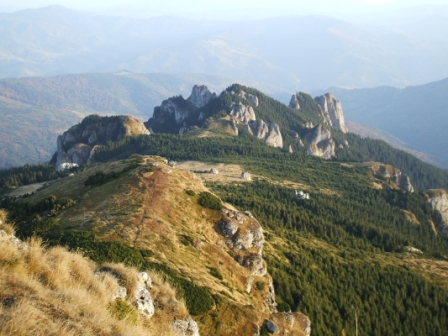

Parcul National Ceahlau este situat în Masivul Ceahlau, in vestul judetului Neamt, la 10 km vest de bicaz
si este delimitat de vaile Bistritei, Bistricioarei, Bistrei. Este constituit dintr-un sistem de culmi
radiare ce converg in doua puncte cu inaltime maxima: Ocolasul Mare (1907 metri) si Varful Toaca (1900 m).
Suprafata Parcului National Ceahlau este de 7.742,5 ha, fiind dupa parcul Forestier Vanatori, cea mai mare
rezervatie naturala. In scopul asigurarii creerii unor zone de conservare si ocrotire a genofondului vegetal
si animal existent, precum si a unui cadru adecvat efectuarii de cercetari si vizite stiintifice, s-a
instituit un regim special de protectie pentru o zona de cercetare stiintifica situata pe Masivul Ceahlau,
in suprafata de 5.830 ha, cuprinsa intre Complexul Lespezi, Piciorul Schiop (la vest de Cabana Dochia) si
Scaunele Zeilor - Ocolasul Mare la sud.
În cuprinsul sau sunt incluse urmatoarele arii protejate:
1. Rezervatia stiintifica "Ocolasul Mare"
2. Rezervatia stiintifica botanica "Polita cu Crini"
3. Monumente ale naturii: "Cascada Duruitoarea" si "Avenul Mare".
Administrarea zonei se face de catre Directia de Administrare a Parcului National "Ceahlau" si de Salvare in
Munti, aflata in subordinea Consiliului Judetean Neamt. Aceasta directie include si Serviciul Salvamont Neamt.
Parcul National Ceahlau dateaza din 2004,este cea mai tanara rezervatie naturala din România apartinand
Masivului Ceahlau.
Geologic,masivul este alcatuit din conglomerate, gresii si calcare.
Aceste roci au dat nastere unui relief cu forme ciudate(turnuri,ace,piramide si polite) ca de exemplu
-Turnu lui Butu,Panaghia,
-Polita cu Crini,
-Cascada Duruitoarea etc.
Flora este dispusa etajat, cuprinzand un complex de elemente fitogeografice cu origini diferite. Printre speciile
rare intalnite (peste 1100 specii de flori si 90 specii de pasari si animale) aici se pot aminti laricele din
"Polita cu crini", floarea de colt, capra neagra, rasul etc.
Puncte de atractie: Toaca, Panaghia, Detunatele, Claile lui Miron, Furculita, Piatra cu Apa,
cascada Duruitoarea cu o inaltime de peste 30 m, rezervatia cu zada (singurul conifer cu frunze cazatoare)
"Polita cu crini", manastirea de pe platou. Plante ocrotite: floarea de colt, zada (laricele), gentiana,
sangele voinicului, papucul doamnei s.a.
Endemisme: odoleanul, vulturica etc.
Ascensiunea pe Ceahlau poate incepe fie de la Cabana "Izvorul Muntelui" (versantul estic), fie din statiunea
Durau sau com. Ceahlau (versantul de nord-vest), sau dinspre sud pornind din Bicazul Ardelean, dar si pe
versantul vestic pe valea lui Martin sau pe valea Bistrei. Statiunea Durau si cele trei cabane ("Fantanele",
"Dochia" si "Izvorul Muntelui") sunt legate printr-o multitudine de trasee turistice. Este singurul munte din
Romania cu hram : Schimbarea la fata (6 august).
|

 Parcul National Piatra Craiului este situat in Carpatii Meridionali incluzand Creasta Pietrei Craiului,
in totalitate si spatii din culoarele intramontane limitrofe, Rucar-Bran si Rucar-Zarnesti. Parcul National Piatra
Craiului se extinde pe raza judetelor Brasov si Arges, incluzand suprafete apartinand localitatilor Zarnesti,
Moeciu (satele Magura si Pestera), Bran, Rucar si Dambovicioara. Se intinde intre coordonatele de 450 22’ 1.73’’
si 450 34’ 49.55’’ latitudine nordica si 250 08’ 51.61’’ si 250 21’ 57.21’’ longitudine estica. Suprafata
totala a Parcului National Piatra Craiului este de 14773 ha din care 7806 ha in jud. Brasov si 6967 in judetul Arges.
Prin pozitia geografica, Parcul National Piatra Craiului, se incadreaza zonal in clima temperata, iar regional
la tranzitia dintre climatul continental vestic de nuanta atlantica si cel excesiv continental. Zona se incadreaza
in sectorul cu clima de munte, tinutul muntilor inalti. In general, clima masivului nu difera mult de a celorlalte
zone montane invecinate. Totusi, pozitia geografica, inaltimea, orientarea si configuratia reliefului imprima
climei unele particularitati locale.
Masivul Piatra Craiului a devenit rezervatie naturala in 28 martie 1938.
Consiliul de Ministri a luat aceasta decizie "datorita caracterului unic al masivului unde se gasesc specii rare ca
Dianthus callizonus, Hesperis nivea, Minuatia transilvanica, Leontopodium alpinum,ca si datorita frumusetii
peisajului".
In 1938, cand rezervatia naturala a fost infiintata, au fost luate in considerare numai 440 ha. In 1972,
aceasta suprafata a crescut la 900 ha, iar astazi, zona de conservare speciala acopera o suprafata de 4879ha,
zona de parc national ocupând cca. 9894 ha. În 1952 (anul in care a fost înregistrat primul amenajament silvic
pentru zona Pietrei Craiului), in jur de 17.2% din suprafata totala a masivului a fost luata in considerare pentru
conservare.
In anul 1990 Piatra Craiului este declarat parc national, alaturi de alte 12 parcuri din Romania.
Incepand din anul anul 1999, se constituie si administratia parcului.
Parcul National Piatra Craiului este situat in Carpatii Meridionali incluzand Creasta Pietrei Craiului,
in totalitate si spatii din culoarele intramontane limitrofe, Rucar-Bran si Rucar-Zarnesti. Parcul National Piatra
Craiului se extinde pe raza judetelor Brasov si Arges, incluzand suprafete apartinand localitatilor Zarnesti,
Moeciu (satele Magura si Pestera), Bran, Rucar si Dambovicioara. Se intinde intre coordonatele de 450 22’ 1.73’’
si 450 34’ 49.55’’ latitudine nordica si 250 08’ 51.61’’ si 250 21’ 57.21’’ longitudine estica. Suprafata
totala a Parcului National Piatra Craiului este de 14773 ha din care 7806 ha in jud. Brasov si 6967 in judetul Arges.
Prin pozitia geografica, Parcul National Piatra Craiului, se incadreaza zonal in clima temperata, iar regional
la tranzitia dintre climatul continental vestic de nuanta atlantica si cel excesiv continental. Zona se incadreaza
in sectorul cu clima de munte, tinutul muntilor inalti. In general, clima masivului nu difera mult de a celorlalte
zone montane invecinate. Totusi, pozitia geografica, inaltimea, orientarea si configuratia reliefului imprima
climei unele particularitati locale.
Masivul Piatra Craiului a devenit rezervatie naturala in 28 martie 1938.
Consiliul de Ministri a luat aceasta decizie "datorita caracterului unic al masivului unde se gasesc specii rare ca
Dianthus callizonus, Hesperis nivea, Minuatia transilvanica, Leontopodium alpinum,ca si datorita frumusetii
peisajului".
In 1938, cand rezervatia naturala a fost infiintata, au fost luate in considerare numai 440 ha. In 1972,
aceasta suprafata a crescut la 900 ha, iar astazi, zona de conservare speciala acopera o suprafata de 4879ha,
zona de parc national ocupând cca. 9894 ha. În 1952 (anul in care a fost înregistrat primul amenajament silvic
pentru zona Pietrei Craiului), in jur de 17.2% din suprafata totala a masivului a fost luata in considerare pentru
conservare.
In anul 1990 Piatra Craiului este declarat parc national, alaturi de alte 12 parcuri din Romania.
Incepand din anul anul 1999, se constituie si administratia parcului.


 Parcul National Hohe Tauern este una dintre cele mai mari rezervatii naturale, din cele cinci existente în Austria.
El cuprinde regiunea muntilor din Alpii Orientali Centrali din Austria cu muntii Hohe Tauern care se întind între regiunea
izvoarelor râurilor Isel, Möll, Mur si Salzach, pe latura est-vest au o lungime de peste 100 km, iar pe directia nord-sud 40 km.
Regiunea este în anul 1981 declarat parc national si are pe teritoriul sau landurile Salzburg (805 km²), Tirol (611 km²)
si Kärnten (420 km²). Atractii turistice cunoscute fiind Cascadele de la Krimm, Cascadele de pe valea Umbal si ghetarul Innergschlöss
si ghetarul Innergschlöss de lânga Matrei in Osttirol.
Parcul National Hohe Tauern este una dintre cele mai mari rezervatii naturale, din cele cinci existente în Austria.
El cuprinde regiunea muntilor din Alpii Orientali Centrali din Austria cu muntii Hohe Tauern care se întind între regiunea
izvoarelor râurilor Isel, Möll, Mur si Salzach, pe latura est-vest au o lungime de peste 100 km, iar pe directia nord-sud 40 km.
Regiunea este în anul 1981 declarat parc national si are pe teritoriul sau landurile Salzburg (805 km²), Tirol (611 km²)
si Kärnten (420 km²). Atractii turistice cunoscute fiind Cascadele de la Krimm, Cascadele de pe valea Umbal si ghetarul Innergschlöss
si ghetarul Innergschlöss de lânga Matrei in Osttirol.